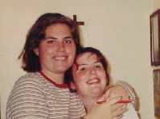

|
|
| Wedding Party : Bridesmaid - Stephanie Zess |
| Stephanie and Amanda were forced to be friends when they were little girls but as they got older they actually started to like each other. Their friendship grew over the little things like macaroni and cheese. Despite the fact that they never went to the same school, Stephanie has been one of the longest friendships Amanda has ever had. As they got older, Stephanie started to hang out with Amanda's friends and she is now even a regular at the annual Frey Christmas caroling party and the annual gingerbread house competition. Stephanie and Amanda may not talk as much, or have as many inside jokes, but she is still one of the greatest friends Amanda could ever have. |
|